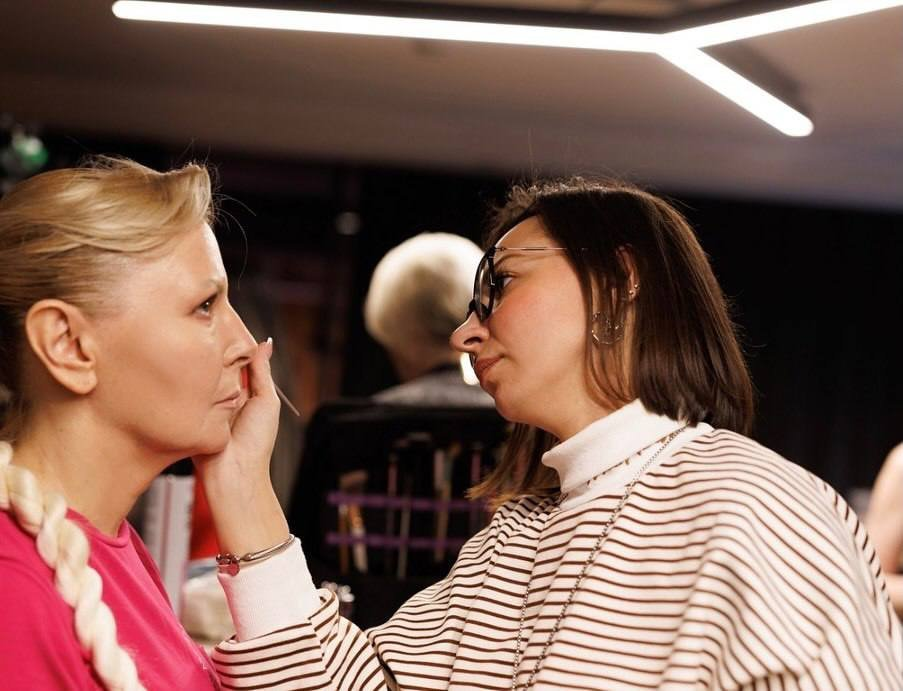
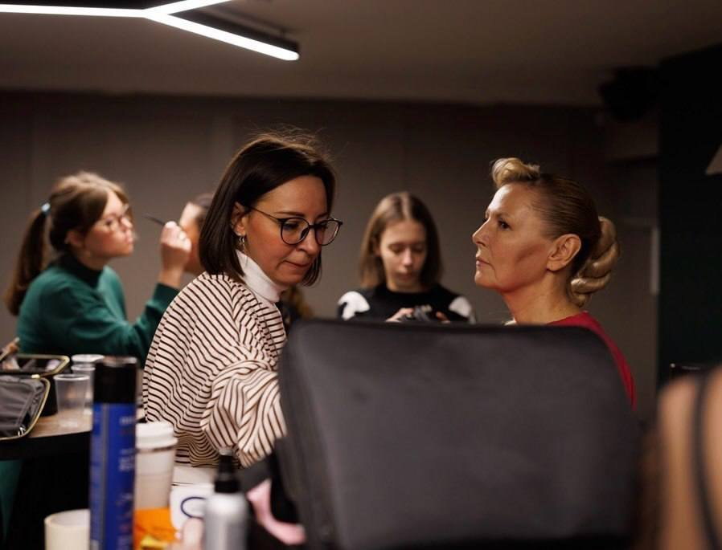

Программы обучения
Структурированные практические программы. Состав публикуется после утверждения.

BEAUTY FRANK Education
Направление
Программы строятся вокруг практики, профессионального взгляда и конкретных задач специалиста.
Мы не публикуем вымышленные курсы, даты или сертификаты. Актуальные предложения появятся после утверждения программы, преподавателя и условий набора.
Форматы
Структурированные практические программы. Состав публикуется после утверждения.
Фокусные встречи по отдельным техникам и профессиональным задачам.
Углубление навыков для практикующих специалистов.
Персональная траектория с разбором текущего уровня и практики.

Расписание
Подтверждённых дат и программ для публикации пока нет.
Оставьте заявку — команда свяжется с вами после запуска подходящего формата. Отправка формы будет работать после подключения обработчика перед публикацией.